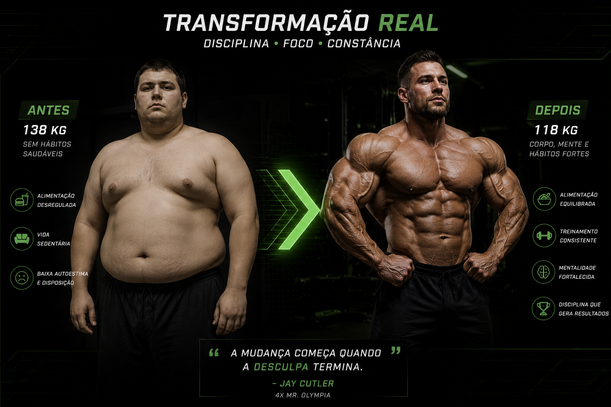

Emagrecimento ou Lipólise
O emagrecimento é o processo de redução do peso corporal, principalmente pela diminuição da quantidade de
gordura corporal. Ele ocorre quando o organismo gasta mais energia do que recebe através da alimentação
durante determinado período, criando um déficit calórico.
A prática de exercícios físicos, especialmente a combinação de treinamento aeróbico e musculação, pode
contribuir para aumentar o gasto calórico e melhorar a composição corporal. A alimentação também possui
um papel importante, pois fornece a energia e os nutrientes necessários para o funcionamento do
organismo.
Além da redução do peso corporal, o processo de emagrecimento pode proporcionar melhora da composição
corporal, aumento da disposição, melhora do condicionamento físico e redução dos riscos relacionados ao
excesso de gordura corporal.

Volume de treino e Emagrecimento..
As séries de trabalho semanais representam a quantidade total de séries realizadas durante os treinos
para cada grupo muscular ao longo da semana. No emagrecimento, o treinamento de força é importante
principalmente para preservar a massa muscular enquanto ocorre a redução de gordura corporal.
De maneira geral, pode-se utilizar um volume de treinamento semelhante ao utilizado para
manutenção ou ganho de massa muscular, ajustando-o de acordo com o nível de treinamento e a capacidade
de recuperação da pessoa. A realização de aproximadamente 10 a 20 séries semanais por grupo muscular
pode ser utilizada como referência para pessoas que também buscam preservar ou desenvolver a
musculatura.
Além das séries de musculação, o emagrecimento é influenciado principalmente pelo déficit
energético. Exercícios aeróbicos, como caminhada, corrida e bicicleta, também podem ser utilizados para
aumentar o gasto energético semanal.
• Resumo: Durante o emagrecimento, as séries de trabalho devem ser planejadas de acordo com o
objetivo de preservar a massa muscular, controlar a fadiga e manter a regularidade dos treinos, enquanto
a redução de gordura depende principalmente do equilíbrio entre o consumo e o gasto de energia.

Melhores Exercícios
| Grupo muscular | Exercícios |
|---|---|
| Peito | Supino reto, Supino inclinado, Crucifixo |
| Costas | Puxada aberta e fechada, Remada aberta e fechada, Pulldown |
| Ombros | Desenvolvimento, Elevação lateral |
| Bíceps | Rosca direta, Rosca inclinada |
| Tríceps | Tríceps na polia, Extensão acima da cabeça, Supino fechado |
| Quadríceps | Agachamento, Leg press, Cadeira extensora |
| Posteriores de coxa | Stiff, Mesa flexora, Cadeira flexora |
| Glúteos | Agachamento, Hip thrust, Afundo |
| Panturrilhas | Elevação de panturrilha em pé, Elevação sentado |
*Para o emagrecimento, a combinação de exercícios aeróbicos com treinamento de força é uma estratégia eficiente. A escolha do exercício deve considerar a condição física, as preferências e a capacidade de manter a atividade regularmente, pois a consistência é fundamental para obter resultados a longo prazo.
Exercícios Aeróbicos
| Tipo de Exercício | Principal Benefícios | Exemplos |
|---|---|---|
| Caminhada | Aumenta o gasto energético e é fácil de manter | Caminhada rápida |
| Corrida | Alto gasto energético | Corrida leve ou moderada |
| Ciclismo | Bom gasto energético com menor impacto nas articulações | Bicicleta ou bicicleta ergométrica |
| Natação | Trabalha o corpo inteiro e aumenta o gasto energético | Nado contínuo |
| Musculação | Ajuda a preservar a massa muscular | Agachamento, supino, remada, etc. |
| HIIT | Corrida, bicicleta ou exercícios em intervalos | Permite realizar exercícios intensos em períodos mais curtos |
| Elíptico | Aumenta o gasto energético com menor impacto | Exercício no aparelho elíptico |